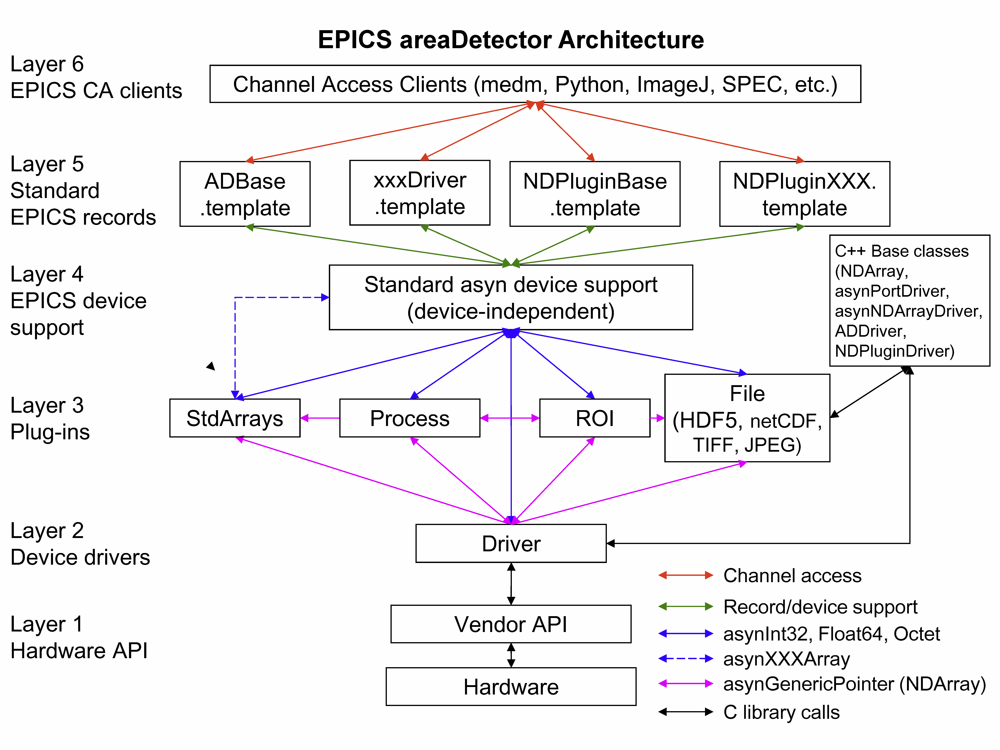

Architecture
The architecture of the areaDetector module is shown below.
From the bottom to the top this architecture consists of the following:
Layer 1. This is the layer that allows user written code to communicate with the hardware. It is usually provided by the detector vendor. It may consist of a library or DLL, of a socket protocol to a driver, a Microsoft COM interface, etc.
Layer 2. This is the driver that is written for the areaDetector application to control a particular detector. It is written in C++ and inherits from the ADDriver class. It uses the standard asyn interfaces for control and status information. Each time it receives a new data array it can pass it as an NDArray object to all Layer 3 clients that have registered for callbacks. This is the only code that needs to be written to implement a new detector. Existing drivers range from about 800 to 2600 lines of code.
Layer 3. Code running at this level is called a “plug-in”. This code registers with a driver for a callback whenever there is a new data array. The existing plugins implement file saving (NDPluginFile), region-of-interest (ROI) calculations (NDPluginROI), statistics calculations (NDPluginStats, NDPluginROIStat), image processing (NDPluginProcess), geometric transformations (NDPluginTransform), buffering and triggering (NDPluginCircularBuff), color mode conversion (NDPluginColorConvert), graphics and text overlays (NDPluginOverlay), exporting NDArray attributes as scalar and waveform records (NDPluginAttribute), conversion of detector data to standard EPICS array types for use by Channel Access clients (NDPluginStdArrays), and conversion of NDArrays to EPICS pvAccess (NDPluginPva). Plugins are written in C++ and inherit from NDPluginDriver. Existing plugins range from about 300 to 3000 lines of code.
Layer 4. This is standard asyn device support that comes with the EPICS asyn module.
Layer 5. These are standard EPICS records, and EPICS database (template) files that define records to communicate with drivers at Layer 2 and plugins at Layer 3.
Layer 6. These are EPICS channel access clients, such as MEDM that communicate with the records at Layer 5. areaDetector includes some client applications that can display images using EPICS waveform and other records communicating with the NDPluginStdArrays plugin at Layer 3. Several of these clients are ImageJ plugins, and the other is a freely runnable IDL application.
The code in Layers 1-3 is essentially independent of EPICS. In principle there are only 2 EPICS dependencies in this code.
libCom. libCom from EPICS base provides operating-system independent functions for threads, mutexes, etc.
asyn. asyn is a module that provides interthread messaging services, including queueing and callbacks.
In particular it is possible to eliminate layers 4-6 in the architecture shown in Figure 1. This means that it is not necessary to run an EPICS IOC or to use EPICS Channel Access when using the drivers and plugins at Layers 2 and 3. This is demonstrated in the simDetectorNoIOC application in ADSimDetector and in the unit tests in ADCore/ADApp/pluginTests.
The plugin architecture is very powerful, because new plugins can be written for application-specific purposes. For example, a plugin could be written to analyze images and do some application specific functions, and such a plugin would then work with any detector driver. Plugins are also powerful because they can be reconfigured at run-time. For example the NDPluginStdArrays can switch from getting its array data from a detector driver to an NDPluginROI plugin. That way it will switch from displaying the entire detector to whatever sub-region the ROI driver has selected. Any Channel Access clients connected to the NDPluginStdArrays driver will automatically switch to displaying this subregion. Similarly, the NDPluginFile plugin can be switched at run-time from saving the entire image to saving a selected ROI, just by changing its input source. Plugins can be used to form an image processing pipeline, for example with a detector providing data to a color convert plugin, which feeds an ROI plugin, which feeds a file saving plugin. Each plugin can run in its own thread, and hence in its own cores on a modern multi-core CPU.
The use of plugins is optional, and it is only plugins that require the driver to make callbacks with image data. If there are no plugins being used then EPICS can be used simply to control the detector, without accessing the data itself. This is most useful when the vendor provides an API has the ability to save the data to a file and an application to display the images.
What follows is a detailed description of the software, working from the bottom up. Most of the code is object oriented, and written in C++.